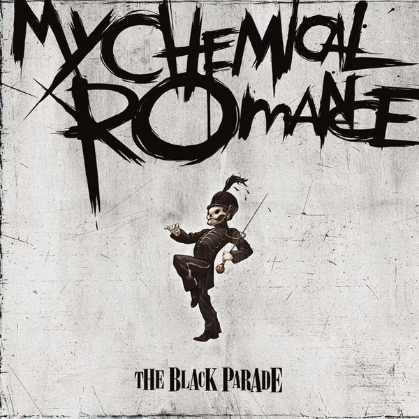

Звуковий слід 2000-х
Емоції, ритм та час. Інтерактивний аналіз даних Spotify.

My Chemical Romance
Музичний профіль (Наведи на фото гурту 👆)
Сирі Дані (Прев'ю 10 записів)
1. Емоційний спектр
2. Танцювальність та Акустичність
3. Популярність